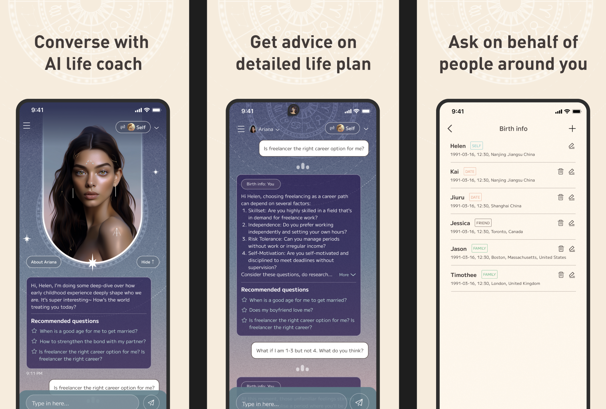
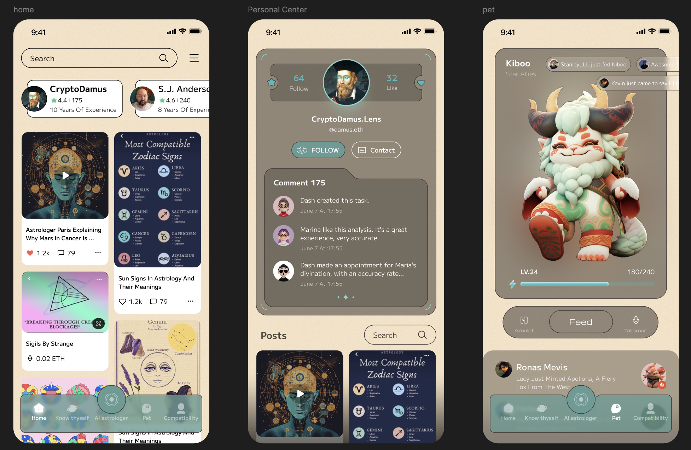
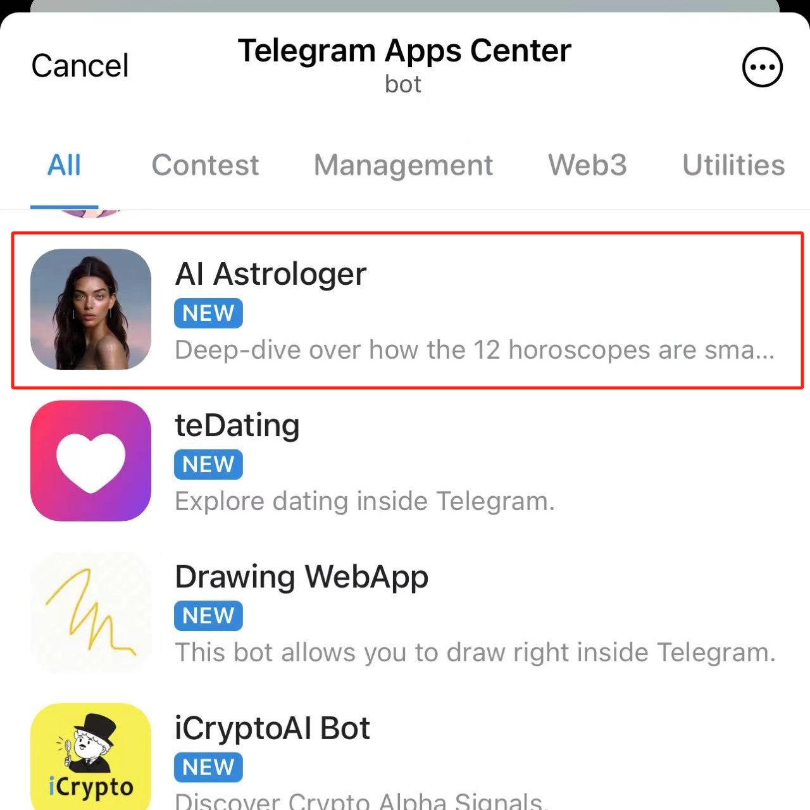
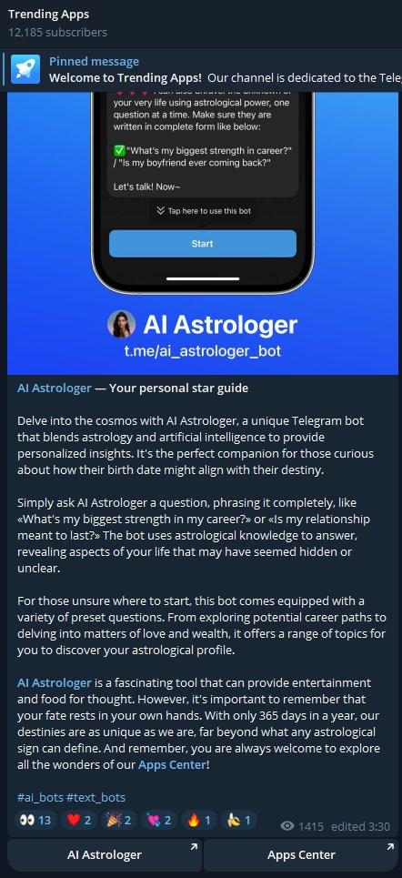
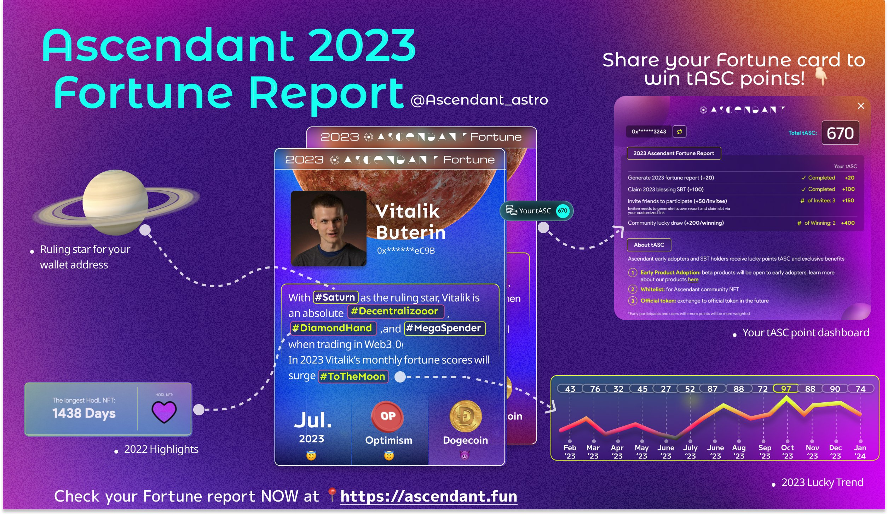
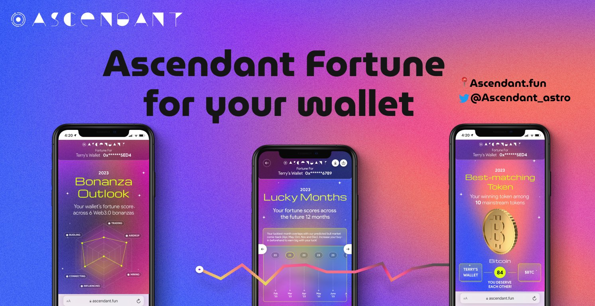

Building an AI astrology-reading chatbot from conversation engine to daily habit
Co-founder · Project Ascendant · AI astrology-reading chatbot · 2022 — 2024
The opportunity
Astrology advice people actually want to talk to
Most astrology products stop at static charts and one-off horoscope cards. What users really wanted was a conversation — ask about love, career, or money, get advice that felt personal, and come back the next day. I was the primary project initiator and co-led product, fundraising, and growth to turn that need into an AI astrology-reading chatbot.

The core product
A structured astrology conversation engine
The heart of Ascendant was the conversation engine. I designed and built a structured dialog system covering 12+ scenarios — from daily guidance and natal-chart Q&A to life-plan advice and asking on behalf of someone else — with 80%+ intent-recognition accuracy. To improve model quality, I curated 10,000+ fine-tuning data points across real user intents and astrology domain language, so replies stayed on-topic, coherent, and useful instead of generic chatbot filler.
Users could converse with an AI life coach, get advice on a detailed life plan, and even ask questions for the people around them — turning astrology from a one-time read into an ongoing dialogue.

Beyond the chat
Turning conversation into a full astrology experience
Around the engine, Ascendant grew into a complete app: a discovery feed of astrologers and content, social profiles, and a collectible companion pet — so one good conversation could become a daily habit rather than a dead-end session.

Fundraising
$100K seed & accelerator admission
As primary project initiator, I co-led fundraising, securing $100K in seed funding and gaining admission into multiple Web3 accelerators.
Distribution & growth
Featured on Telegram · 20K+ users
I built the growth engine through ecosystem partnerships and targeted campaigns on Telegram and Twitter — acquiring 20,000+ users with 60% zero-cost acquisition and 35% retention.


Where it started
Fortune for your wallet
Before the full chatbot, Ascendant began as a shareable, gamified Web3 experience that turned any wallet address into a personalized Fortune Report. That viral loop seeded the early community — and proved people would share astrology content if it felt personal and playful — before we doubled down on the conversation engine as the core product.

